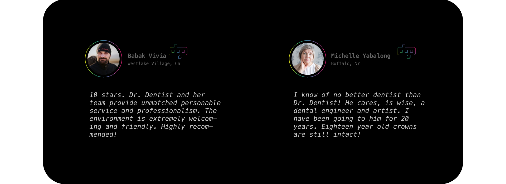

dental office reviews_
dental office reviews_
Boost Your Reputation - And Patient Numbers - Through Dental Office Reviews
You may not be able to control what people say, but you can influence them with your actions.
There’s no way around it. Whether through Google, Facebook or Yelp, one of the first things prospective dental patients do when looking for a new dentist is to check the reviews. Patients want a reliable dentist they can trust, and they’re much more likely to trust a dentist office with five great reviews than a new one with zero. Online reviews can also impact your dental website’s rankings in search results. Search engines often prioritize sites with top reviews since they are more likely to meet searchers’ needs. A better online reputation means a more SEO-friendly site, allowing your dental website to appear at the top of the rankings.
If you’re operating from a clean slate or a muddied online reputation, it’s critical for you to spruce up your reputation with great reviews as soon as possible. At Dental Game Plan, we have systems in place to secure you incredible reviews and testimonials for stellar dentist online reputation management, no matter what your situation. Ready to show off your practice’s best side and use incredible online reviews to your growing practice’s advantage? Reach out to our expert dental marketing team today at (323) 844-0339, and we’ll help you take charge of your online standing.
The Facts About Online Reviews
Certain review websites pack a bigger punch! See which influencers our team focuses on…
The most visited websites for dental reviews—or any reviews, for that matter—are Yelp, Google, and Facebook. As you might expect, each platform has its own flavor, consisting of both its user interface and its audience. The number one most visited site in the world, Google, accounts for 57.5% of all the reviews on the internet, and more than 60% of consumers visit Google to check for business reviews. It can even be hard to miss them as top reviews typically appear when looking up a dentist or practice through the search engine.
As far as volume goes, Facebook comes in second to Google. Even with only 19% of all reviews online, the site’s 2 billion monthly users give it the power to impact half of all consumer and patient decisions. These glowing reviews are also connected to your practice’s Facebook [META] page, allowing you to spread your social media outreach even further. Next to Google, Facebook truly is a force to be reckoned with.
While it’s the least popular of the three, Yelp still sports upwards of 178 million unique monthly visitors, and it’s often a go-to source solely for reviews for many internet users. In fact, 92% of Yelp users make a purchase after visiting the platform, showing that the site has a lot of power over whether potential patients are willing to make the jump to visit your dental practice. At Dental Game Plan, we make sure you have as close to a 5-star reputation on all three of these platforms and beyond.
The Power Of A Great Reputation
Here are a few ways to give your reputation a much-deserved boost.
Why do we focus on reputation management for dentist offices as a dental marketing company? Well, we’ve seen how great online reviews and reputations directly lead to more patients, rapid office growth, and greater revenue for our dentists. Every one-star increase in Yelp reviews increases revenue by an average 5-9%, and improving your star ranking by 1.5 times could bring you as many as 13,000 more leads! That’s nothing to sneeze at and certainly a huge avenue of potential that our team takes advantage of.
As a general rule, you want your business to have at least 4 out of 5 stars on any 5-star system out there. A great many internet users won’t even consider visiting a dentist under 4 stars. However, for a 4.5-star dental practice, it can take a lot of reviews to get and stay there, especially if you want it to make a mark on your search rankings and visibility. Count on the Dental Game Plan team to make this smooth and easier than ever. Reach out to us today at (323) 844-0339, and we’ll help your dental office shine online!
high score: Dr. Amada
rosewood dental, Los Angeles
Filtering Reviews For Your Best Look
A few tech-savvy precautions for accumulating positive reviews
At your dental practice, you have an easy source for creating a golden reputation online, right? While you can encourage happy patients in your office to leave a review (and make sure they post it before they leave your office), there are some pitfalls to this method. One of the big ones is that Google and other platforms look at the IP addresses of your reviewers. Asking multiple patients to review your services from the same IP, such as your office’s computer or table, looks like a single person is leaving those reviews. As you might expect, Google and it’s SEO algorithms do not like this, especially if your patients leave too many online dental reviews at once.
At Dental Game Plan, we take this into account when it comes to collecting and filtering your dental office’s reviews. The key to online dental marketing is mixing the authentic with the strategic, ensuring your new and existing patients always see your practice at its best and most caring without feeling that they are being sold to or “tricked.” If a patient can’t trust a dentist with their reviews, then they can't trust them with their smiles either. However, our marketing experts make sure your patients feel confident and secure visiting your practice, making it easier than ever to grow your office. Call our team at (323) 844-0339 today to jumpstart your dental online reputation!
Surviving Bad Reviews And Raising Your Reputation
We don’t let negative reviews sour potential patients’ opinions and instead turn your online reputation around!
It’s almost impossible to avoid negative reviews. Sooner or later, a disgruntled patient will complain about something, even if it’s unfair, undeserved, or disingenuous. While many internet users know to take all online reviews as a whole and with a grain of salt, negative reviews—both organic and fake—can leave a mark. With Dental Game Plan, our dentist reputation management team can help you curate your practice’s reviews to boost your online reputation.
Of course, the best way to handle a negative online dental review is to prevent it from happening in the first place. That’s not always possible. One of the ways our team can help mitigate the damage caused by bad reviews is through outreach, such as responding to reviewers to let patients know you care and want to do better. This not only shows the unhappy reviewer but any potential patients that you’re willing to work with your patients until they’re satisfied. We also use our tried and tested systems to bolster your ratings with an influx of great reviews and happier patients. After all, most patients are unlikely to dig too deeply if the majority of reviews are positive and honest.
According to Alexa rankings, Google My Business is at the top at #1 and Facebook is #4. While Yelp isn’t in the top 50 at rank 64, it’s still incredibly useful for online reputation management for dentists. Our team focuses on these sites and more when boosting your practice’s reviews and internet presence.
The vast majority of younger internet users trust online reviews more than in-person sources. However, like everything people say online, they can be misleading or even incorrect depending on the reviewer. On some occasions, dentists have found that breakups and poor relationships in their personal lives have left petty negative reviews on their site. In others, businesses buy or fake positive reviews to make their practices look shiny and new.
The exact number is difficult to pinpoint. However, according to one 2018 survey, 33% of consumers believe they saw “a lot” of fake local business reviews. While this typically pertained to fraudulent or paid for Amazon reviews, it can extend into many other services as well, including dentistry.
It’s possible, but fake Google reviews are often not too difficult to spot. Since they are often used simply to artificially boost online ratings, these reviews are usually poorly worded and lack relevance to the company or service. At Dental Game Plan, we instead choose to more organically improve your online prestige with genuine reviews from your happy patients. With our systems, technologies, and campaigns, we make sure we boost your internet reputation with real reviews that show off your incredible dental work!